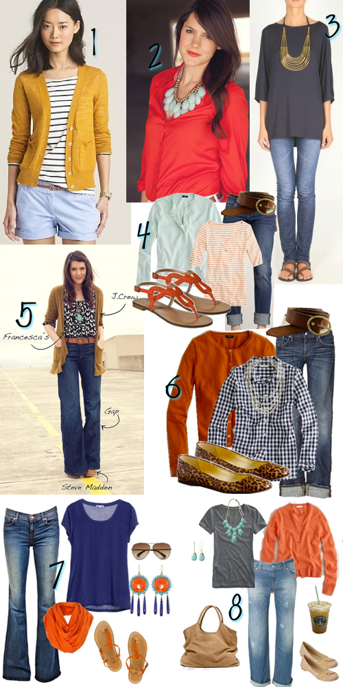
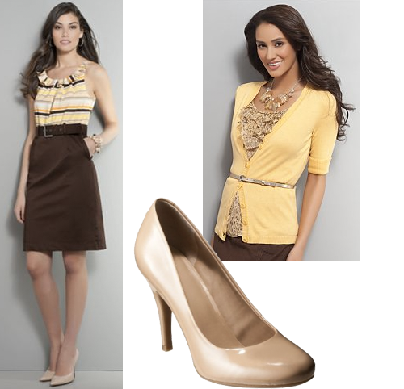

I’m ready! Ready for sweater weather…we are slowly getting there…at about 2:30p yesterday I noticed it was only 81 degrees. Â That’s definitely a good sign. Old Navy has got some definite cuteness going on in the sweater arena. Â Which be your fav?
Pinterest: Outfit Love
July 25, 2011 by
Hi my name is AK and I’m a Pinterest addict. Â This is a recent development in my life, so bear with me as I show you this week all the things I’ve fallen in love with on Pinterest.
Today I’m starting with outfits. Â Seeing all these outfits gives me a ton of inspiration to shop my closet and put things together that I normally wouldn’t. Â It also makes me long for fall/winter so I can start wearing my beloved cardigans again.

- mustard cardigan/striped top/light blue shorts
- coral top/aqua necklace (if you are not currently following Kendi Everyday I IMPLORE you to start, I love her outfits and love her humor)
- grey top/gold statement necklace (I found this via Ms Cardigan Junkie herself who you should also be following)
- aqua cardigan/coral and white striped top
- black and white top/turquoise necklace/ruffle cardigan
- burnt orange cardigan/gingham top/leopard shoes
- blue top/orange scarf/fun earrings
- grey tee/orange cardigan/turquoise jewelry/tan bag
Are you on Pinterest? Have you found an outfit combo you love lately, do tell!
More Coral!
July 19, 2011 by

Yesterday I posted on coral nails, it’s like my new favorite color right now. Â And I love this bright coral with a really light aqua. Â What’s your favorite color or color combo right now?
- Tropical Coral Lipcolor, Loreal
- Jackie Cardigan, J.Crew
- OPI Shootout at the OK Coral, Amazon
- Slub-Knit Henley Tunics, Old Navy
- Merona Emeline Braided Flat Sandals-Pewter, Target
- Diamond Cluster Earrings, Sundance Catalog
- Dockers Truly Slimming Shorts, Kohls
Outfit Request: Defending a Thesis
March 9, 2011 by
I got a request yesterday from a Tipsy reader asking my opinion about what to wear when defending a thesis in a science field. For those of you who don’t know any science-minded people, many of them are a tad bit challenged when it comes to style. And by a tad bit, I mean a whole lot. Â Because they often dress super casual for work (jeans and socks with sandals…eek!), the goal is to look professional without being too dressy (i.e. no suits). Here are a few options I came up with…
option 1. Fixed Bow Striped Sheath Dress +Mossimo Black Vanette Kitten Heel Pumps

option 2. Merona Collection Jillian Crosshatch Skirt + Merona Women’s Double Layer Shirred V-Neck Top +Â Adi Desings Classic Pointed Toe Pumps

option 3. Ruffle and Striped Belted Dress + Cuffed Sleeve V-Neck Cardigan + Mossimo Pearce Pumps

option 4. Â Banded Waist Button Front Shirt + Chino Solid Ruffle Skirt + Mossimo Pearce Pumps

For those of you looking for something less trendy, you can never go wrong with a classic sheath dress!
Latest Loves
March 1, 2011 by
These are the latest things I’ve been crushing on lately. Â What are you crushing on lately?
- Elastic Espadrilles, Boden-I could not love this color more. Â The price on the other hand, I could do without that.
- Jewelled Button Cardigan, Boden-I love me a good cardigan and this just snazzes things up a bit.
- Sky Drops Earrings, Anthropologie-I helped throw a baby shower over the weekend and this was the hostess gift I got. I am in absolute love with these earrings.
- Coptic Cross Bracelet, Sundance Catalog-I saw a bracelet similar to this on the BonBon Rose Girls site and have yet to stop thinking about it.  This is the closest I’ve come to finding something like it.
- Mossimo Ownah Striped Espadrilles, Target-I actually purchased these since it’s already getting summer-like here . Â I plan on wearing the hell out of them this spring/summer.
Maternity 2.0
January 20, 2011 by

I wish people would tell you that you will essentially have 2 maternity wardrobes, and I’m currently on 2.0. I guess this may not be true for everyone, but I will tell you that I woke up one morning and over half of my maternity wear had turned to crop tops! This may be because I have a really long torso and it may also be because I am carrying this baby ALL out front…either way, I had an excuse to pick up these cute duds!
- Target, Maternity V-Neck Ruched Side Fashion Top
- Target, Maternity Long-Sleeve V-Neck Knit Top
- Gap, Ruffle henley placket
- Old Navy, Maternity ruffle-trim jersey tunic
- Gap, Cowlneck blouson top
- A Pea in the Pod, 3/4 sleeve rib-knit maternity sweater
- Gap, Textured single-button cardigan
Christmas in Review: AK
January 3, 2011 by
We had a great Christmas! My husband and I think this year has been the best so far in terms of celebrating with our son. Â He got excited to hand out gifts and open gifts and play with everything. Â It was super fun. Â Here are a few things I got for Christmas this year:
- Jewelry Cleaner, Brookstone-If you’ve ever thought about getting one of these things, do it! Do it now! All you do is add water and it uses sound waves to clean everything. Â I immediately did my wedding ring and watch and embarrassed at the amount of gunk that came off both of them. Â And I THOUGHT I kept them clean. Â This also does eyeglasses, which I haven’t done yet but am psyched to do.
- Jackie cardigan, J.Crew-I love these cardigans and buy them at the outlet store or ask for them as gifts. Â I’m a cardigan addict. Â I received navy and cerise for Christmas.
- iPhone Case, Kate Spade-I was in need of a new case and received one like this and it’s right up my alley what with all the colors!!
- Apple gift card, Apple-In combination with my husband we received enough apple gift cards to purchase an iPad. Â However after a twitter questionnaire we’ve decided to wait on the next version to come out before we buy it. Â I think that’s in April. Â I think.
- iSi Flexible Mixing Bowls, Amazon-A month or so ago, in an effort to do something in the kitchen, I gave my son a couple of mixing bowls and a wooden spoon to occupy him. Â That turned into me needing new bowls. Â I don’t think these will break.
The best gift of all might be what Santa brought my son. Â He loves it more than anything and it gives his parents a chance to sit and chill for a few minutes. Little Star Bouncer, Walmart

Christmas Wishlist: AK Edition
December 14, 2010 by
I had sort of a hard time thinking about what I would want for Christmas this year….insane right? Last year I went to town on a dream list and this year I could barely come up with a  realistic list!! What’s wrong with me!!  So here’s my short list of goodies I’d love, I’ve left off boring things like new towels, a new duvet cover and a new set of drinking glasses…I didn’t want you to fall asleep while browsing!
- Ultrasonic Jewelry Cleaner, Brookstone-My mom has one similar to this and it gets the job done. Â Kind of a set it and forget it kind of jewelry cleaner.
- Present Day Pearl Hoops, Sundance-These are fantastic and would be a great go with everything type of earring.
- Jackie Cardigan, J.Crew-I love this cardigan and have it in a few colors thanks to the outlet near my house. Â I could sure use it in cerise, navy or dried parsley.
- Travel Envelope, Abas Accessories-I end up having a ton of paper stuff free flowing in my purse and I’d love a leather envelope to keep it in. Â This would fit the bill!
- Michele Silicon Watch Strap, Nordstrom-I have a Michele watch and would LOVE a silicon band…any color would do but this green sure is fun!
- Iced Blueberry Ring, Lolo’s Rings-I have a ring from this story and have been eyeing this one ever since.
- PixelSkin for iPhone, Speck-I need a new case and I’m loving this green one.
Holiday Gift Guides: The Parentals
December 9, 2010 by

If you are like me, you struggle every year with what to get your parents for Christmas. Â Generally I can get by with finding something for my mom, but for my dad–that’s a tough one. Â As I went on the hunt I found some pretty cool things….granted, some of these are out of my price range but they may not be out of yours so I thought I’d pass them along!
- Frontgate, Amplified Phone with Answering System-check out the HUGE numbers and the PHOTO speed dials!
- Old Navy, Cable Knit Cocoon Cardigan
- American Apparel, Circle Scarf
- Sur La Table, Moistly Grilled Cast Iron Grill Humidifier
- Amazon, Vacuum Seal Marinizer System
- Williams-Sonoma, Monogrammed Forged Steak Brand
- Crate and Barrel, Pixie Candleholder
- Sundance, Mason Jar Snowglobe
- Crate and Barrel, Fiesta At Rick’s Cookbook by Rick Bayless
- Sur La Table, Jura Cup Warmer-OMG this is so cool!
- The Home Depot, Wireless Rain Gauge
- The Home Depot, Ames Water Genie
$50 Friday: Comfy and Cozy
October 8, 2010 by

The weather in south Texas has FINALLY cooled down a bit, and it is beginning to feel like fall. That’s got warm and cozy clothes on my mind, like this outfit…
- Forever 21, Fab Skinny Jeans
- Forever 21, Crystalline Drop Earrings
- Forever 21, Basic LS Fitted Top
- Forever 21, Leatherette Ballet Flats w/ Bow
- Forever 21, 3/4 Slv Shawl Sweater Cardigan


{kind=link}
Recent Comments